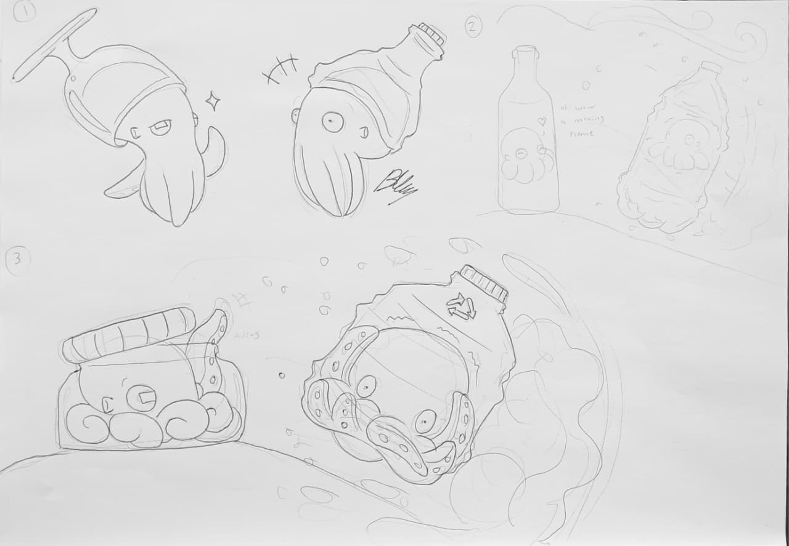
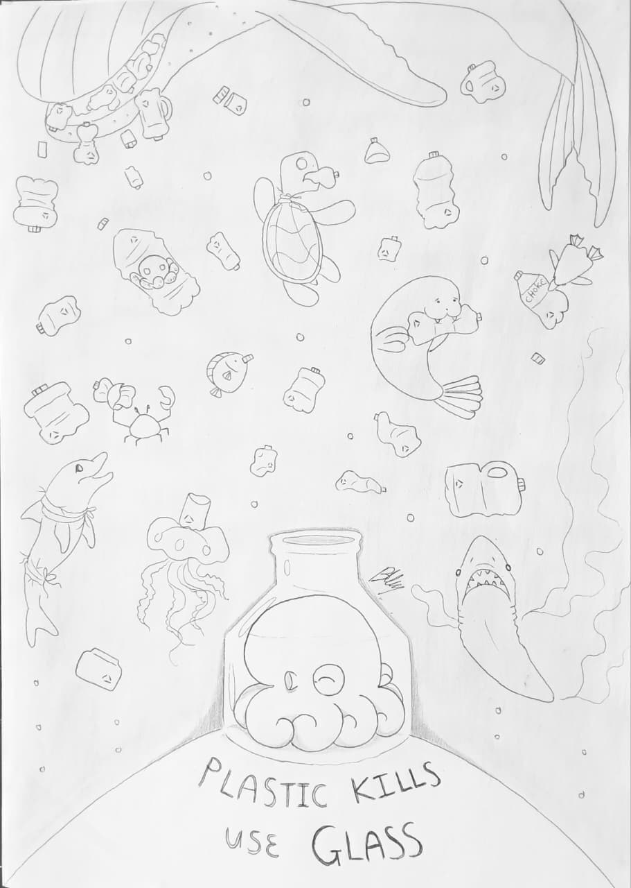
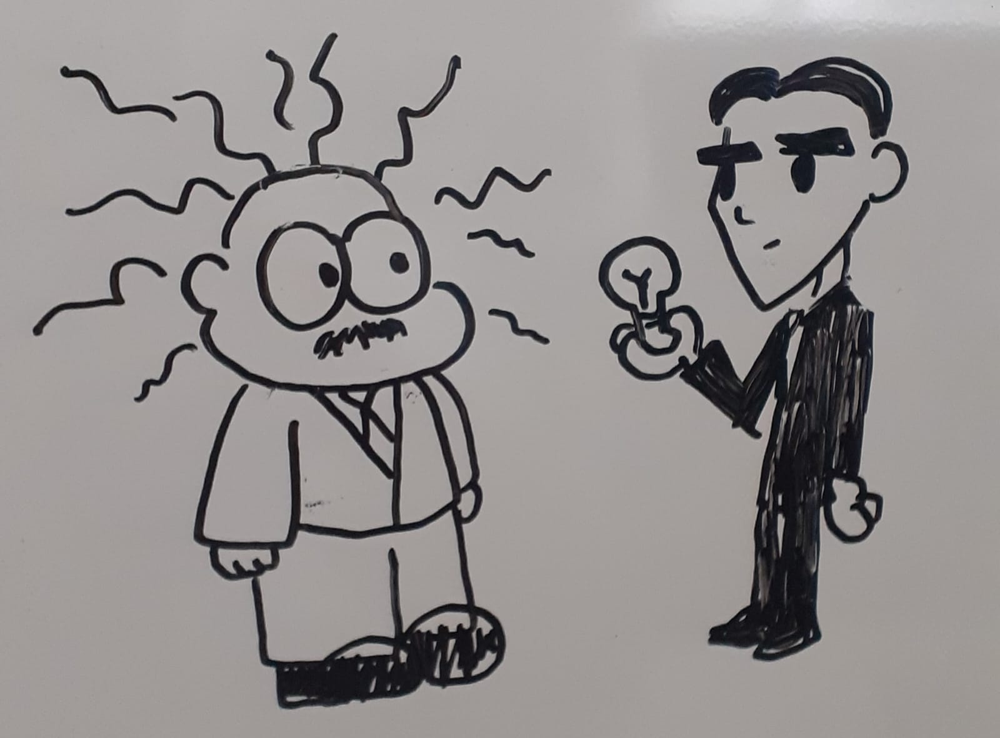
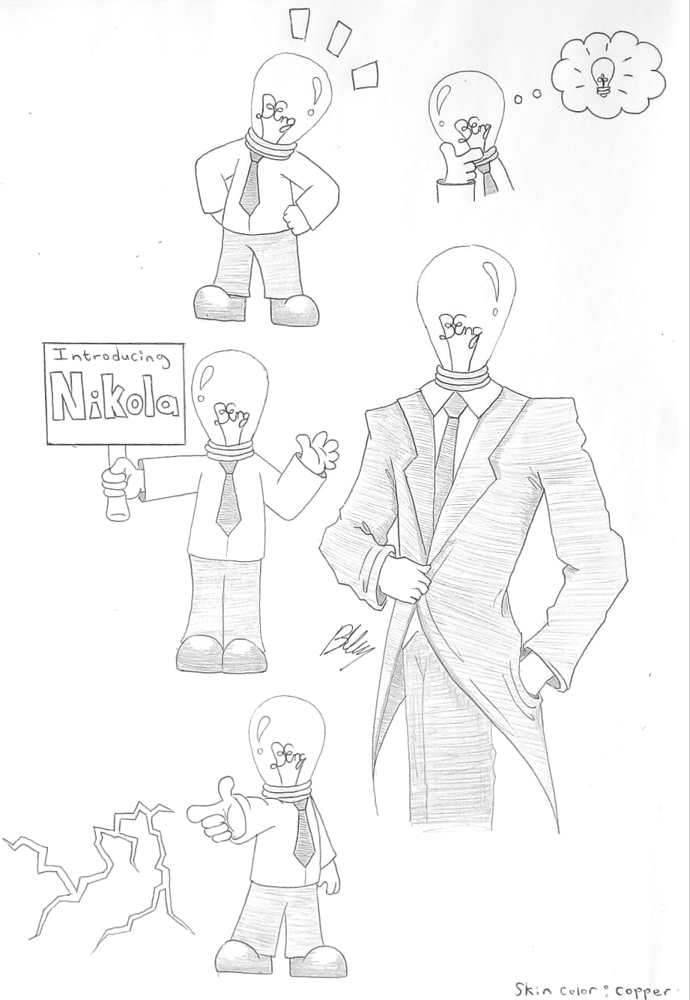
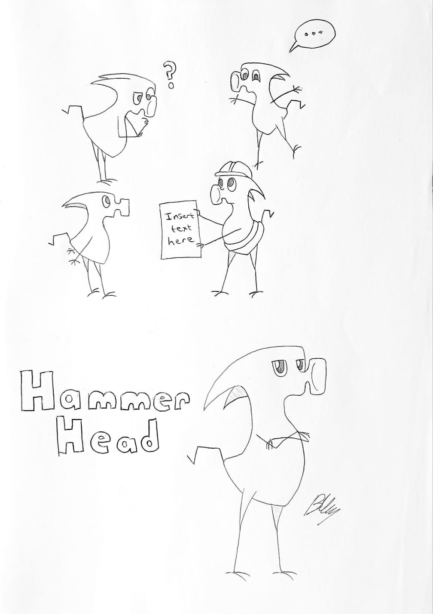

Artwork Gallery
Art pieces, from quick lecture doodles to full illustrations. Tap any piece to see the full story behind it.

Plastic Ocean: Concept Sketches
Early drafts for the 2021 Matrics in Antarctica competition.

Plastic Kills, Use Glass
The final submitted piece for the 2021 Matrics in Antarctica competition.

Bam
Bam the jocky deer in the Beastars art style.

To Your Valour
A lighthearted Dark Souls III tribute.

This Spot Marks Our Grave
A manga inspired artwork of me and my partner encountering Prince Lothric before his boss fight during our multiplayer campaign.

Dumbo Octopus Character Sheet
Full personality sketches for an original character of mine, based on the Grimpoteuthis octopod species.

E = mc²
A small doodle from my old whiteboard depicting Einstein and Markiplier in their prime.

They blinded me with science
Another small doodle from my old whiteboard depicting Einstein and Tesla.

I Think We're Gonna Have to Kill This Guy
A quick meme-format crossover sketch of Hello Kitty and Punpun Onodera.

Kiki the Exceed
A pet portrait sheet depicting our late pug, Kiki as an exceed from the Fairy Tail anime.

Gravity Falls Us
A self-insert couple portrait made purely for fun.

Octo Love
Octopi are not known for exhibiting nurturing maternal behaviors. This piece is an alternative take on their biology.

Pencil concept sheet of a lightbulb headed mascot named Nikola
A branding proposal for the Stellenbosch Engineering faculty mascot.

Pencil concept sheet of a hammerhead inspired bird mascot
An alternative mascot concept from the same project.

Mind If I Join You?
A quiet crossover sketch of Omori and Punpun Onodera, two characters fining companionship in their loneliness.

Comfort Toys
Two characters drawn holding plush versions of each other's supporting character.